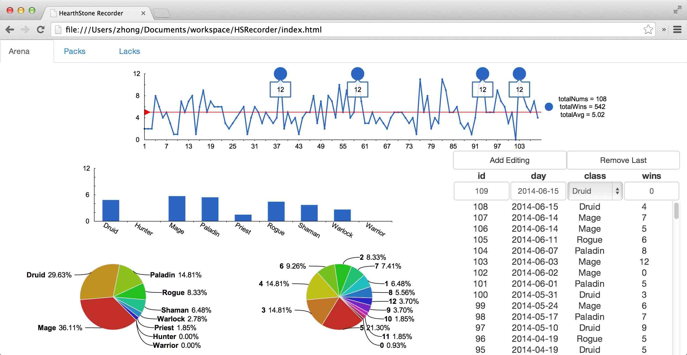

HearthStone Recorder
This project provides a single HTML page for recording your HearthStone's arena winning rates and opening packs results.

In fact, an Excel file may be enough. But I want to have more power to add personal functionalities, and practise programming for fun at the same time. :)
It leverages HTML5 local storage APIs to manage all data. The database is a SQLite file, whose location has been specified in the corresponding file. Because its location is controlled by the browser, be careful when you clear the browser caches.
The open source library for drawing statistics charts is provided by Dianping's Venus project, which is built on KineticJS and Raphaël.